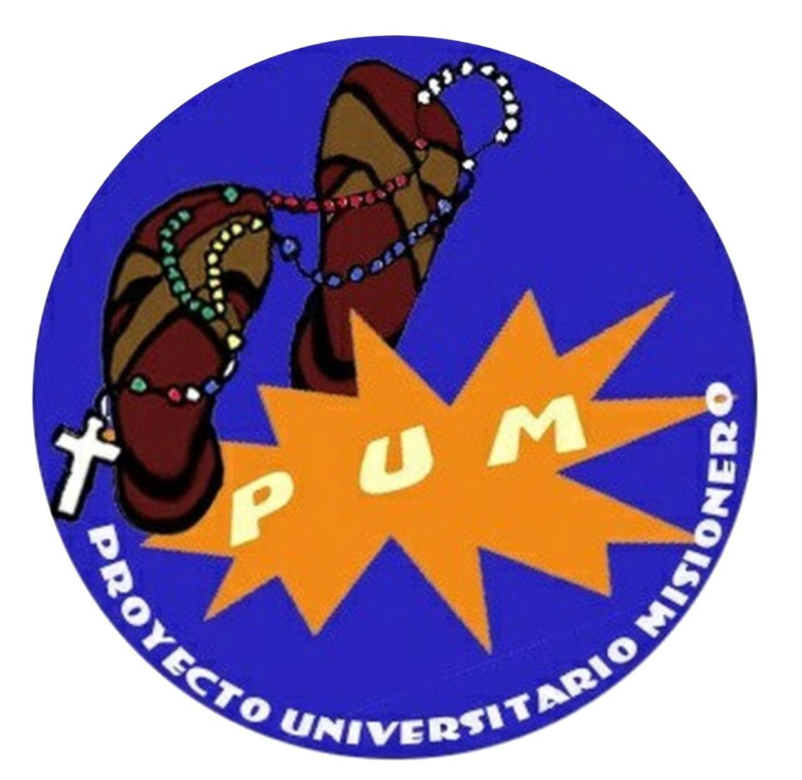

PUM

Te esperamos este sábado a las 15:30 hs frente al Santuario del Divino Niño Jesús. Vení a compartir, servir y vivir la misión con nosotros.
Seguinos en InstagramVisitamos comunidades y acompañamos a quienes más lo necesitan.
Compartimos momentos de fe, oración y servicio.
Construimos comunidad desde lo simple y lo cotidiano.
"Vayan y hagan discípulos a todas las naciones"